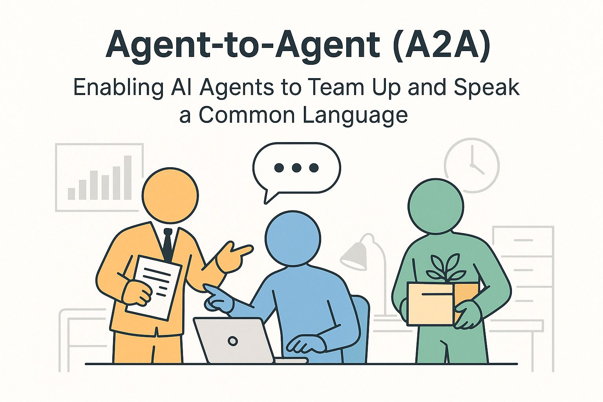

מה זה הפרוטוקול החדש Agent 2 Agent? עוד לא התאוששנו מ״MCP״ ועכשיו יצרו פרוטוקול נוסף. אז הנה הסבר פשוט לנושא:
פורסם במקור ב LinkedIn
מה זה הפרוטוקול החדש Agent 2 Agent? עוד לא התאוששנו מ״MCP״ ועכשיו יצרו פרוטוקול נוסף. אז הנה הסבר פשוט לנושא:
תדמיינו משרד עם צוות מומחים – אחת בגרפיקה, שני באקסלים, שלישי בתכנון.
כל אחד מצטיין, אבל הם יושבים בחדרים אטומים.
אף אחד לא מדבר עם השני.
כמה רחוק הם יגיעו?
זה בדיוק מה שקורה בעולם ה-AI.
יש המון מערכות חכמות – אבל הן לא מדברות זו עם זו.
Agent-to-Agent (A2A) הוא פרוטוקול תקשורת שמאפשר ל-AI agents לשתף פעולה.
לא משנה מי בנה אותם או איך הם עובדים – הם מדברים באותה שפה.
כמו שאנגלית הפכה לשפת עבודה עולמית, A2A זאת התשתית שמאפשרת ל-AI להבין אחד את השני: לבקש עזרה, להעביר משימות, ולתאם פעולות בזמן אמת.
ניקח את הדוגמה הנפוצה: אתה מבקש מה-AI לארגן נסיעת עסקים:
דרך אחת היא לבנות סוכן-על שיודע לעשות הכל בעצמו, אבל זה מורכב מאוד ומעמיס מאוד על סוכן אחד. במקום זה - הוא רק צריך לדעת לעבוד בצוות.
הוא רק צריך לדעת לדבר עם אחרים שיודעים:
calendar agent מתאם תאריכים,
travel agent בודק טיסות,
budget agent שומר על התקציב.
כל אחד עושה את החלק שלו והתוצאה מרגישה כמו קסם מתוזמן.
אבל הקסם האמיתי מתחיל כשמבינים שזה לא רק חיסכון בזמן.
A2A מייצר תשתית לרשת של מומחים דיגיטליים שכל אחד מהם מתמחה, מתעדכן, ומתממשק לאחרים.
זה אומר:
✅ שדרוג Agent אחד בקלות בלי הצורך לפרק את כל המערכת
✅ אוטומציה של תהליכים מורכבים בלי מגע יד אדם
✅ התמחות אמיתית במקום פתרונות גנריים
העתיד לא שייך ל-AI אחד שמנסה לעשות הכל.
הוא שייך לארגון שלם של סוכנים שמדברים, משתפים פעולה, ויודעים לעבוד יחד.
וזה בדיוק מה ש-A2A מביא לשולחן.
